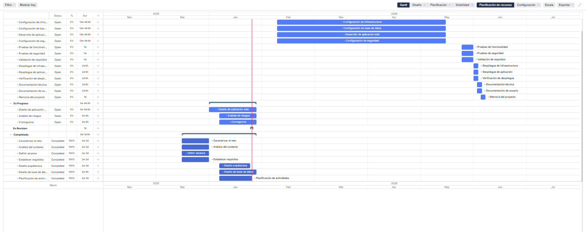

Diseño y planificación
Arquitectura

Decisiones de Diseño
- Infraestructura base en AWS: Implementación sobre Amazon EC2 con instancias optimizadas para desarrollo, red configurada mediante Amazon VPC, subredes públicas/privadas, reglas de seguridad (Security Groups), NACLs y servicios esenciales como DHCP, DNS interno, SSH y control de tráfico mediante AWS Firewall Manager.
- Sistema de base de datos gestionado: Uso de Amazon RDS (MySQL o PostgreSQL) con despliegue multi-AZ, backups automáticos, cifrado en reposo (KMS) y gestión de accesos mediante IAM y roles con privilegios mínimos.
- Aplicación web profesional: Servidor Apache o Nginx desplegado en EC2, integrando un WordPress personalizado para el portafolio de videojuegos. Almacenamiento de contenido multimedia en Amazon S3 y distribución global mediante Amazon CloudFront.
- Seguridad y mantenimiento avanzado: Certificados SSL/TLS gestionados con AWS Certificate Manager, copias de seguridad automatizadas en S3 y Glacier, scripts de automatización en AWS Lambda, y monitorización centralizada del sistema con Amazon CloudWatch.
Exclusiones en fase inicial
Las siguientes funcionalidades quedan excluidas de la fase inicial del proyecto y podrán ser implementadas en futuras iteraciones:
-
Integración con Steam/Epic: La integración con plataformas de distribución de videojuegos como Steam o Epic Games Store no está contemplada en esta fase inicial.
-
Sistema de descargas: No se implementará un sistema propio de descarga directa de videojuegos en esta fase.
-
Foros o comentarios: La funcionalidad de foros de discusión o sistema de comentarios en los videojuegos no está incluida en el alcance inicial.
Diseño de la Base de Datos
El diseño de la base de datos está basado en un modelo Entidad-Relación (ER) que busca reflejar las necesidades principales de la plataforma CreviPlay: gestión de usuarios, proyectos de videojuegos, medios, categorías, desarrolladores, contactos y registro de logs de actividad. La estructura facilita la integridad de los datos y escalabilidad del sistema.
Principales entidades y relaciones
- usuarios: Contiene la información básica y de autenticación de cada usuario del sistema.
- proyectos: Almacena el detalle de cada videojuego desarrollado, su estado y relación con el usuario creador.
- medios: Gestiona los recursos multimedia asociados a cada proyecto (imágenes, videos, archivos).
- categorias: Permite clasificar los proyectos por temáticas o géneros.
- desarrolladores: Registra los miembros del equipo que participan en proyectos específicos.
- contactos: Almacena posibles contactos externos y su relación con proyectos.
- logs_sistema: Mantiene un historial detallado de las acciones realizadas en el sistema por los usuarios.
- Tablas de unión: Se han diseñado relaciones N:M para proyectos-categorías, proyectos-desarrolladores y proyectos-contactos, permitiendo flexibilidad en la gestión de participaciones y clasificaciones.
Diagrama Entidad-Relación
A continuación se muestra el modelo ER realizado. El diagrama resume de forma visual la estructura de la base de datos, sus tablas principales, atributos y relaciones clave.

Figura: Modelo Entidad-Relación principal de la base de datos CreviPlay
Requisitos principales
Funcionales: - Plataforma web con portafolio - Panel de administración - Gestión de Proyectos
No funcionales: - Tiempo de carga < 2 segundos - Backup diario - Seguridad (HTTPS, encriptación)
Del negocio: - Crear presencia web profesional - Mostrar los videojuegos
Matriz de trazabilidad de requisitos
La siguiente tabla relaciona cada requisito con los módulos del ciclo formativo y su estado de implementación:
| Requisito | ASGBD | ASO | IAW | Servicios de Red | Seguridad | Estado |
|---|---|---|---|---|---|---|
| Plataforma web con portafolio | - | ✓ | ✓ | ✓ | ✓ | Pendiente |
| Panel de administración | ✓ | ✓ | ✓ | ✓ | ✓ | Pendiente |
| Gestión de Proyectos | ✓ | ✓ | ✓ | - | ✓ | Pendiente |
| Tiempo de carga < 2 segundos | - | ✓ | ✓ | ✓ | - | Pendiente |
| Backup diario | ✓ | ✓ | - | - | ✓ | Pendiente |
| Seguridad (HTTPS, encriptación) | ✓ | ✓ | ✓ | ✓ | ✓ | Pendiente |
| Crear presencia web profesional | - | ✓ | ✓ | ✓ | ✓ | Pendiente |
| Mostrar los videojuegos | - | ✓ | ✓ | ✓ | - | Pendiente |
Leyenda: - ✓ = Módulo relacionado con el requisito - - = Módulo no relacionado con el requisito - Estados: Pendiente, En desarrollo, Completado
Diagrama de Gantt
Este es el diagrama de Gantt de nuestro proyecto (Sujeto a cambios)

Roles del equipo
- Líder de proyecto: Alejandro Mariño.
- Administrador de sistemas: Iker Sanchez.
- Desarrollador web: Alejandro Mariño.
- Administrador de base de datos: Alejandro Mariño y Iker Sanchez.
- Especialista en seguridad: Iker Sanchez.
- Documentador: Alejandro Mariño y Iker Sanchez.